Maintaining a Healthy Lifestyle during COVID-19
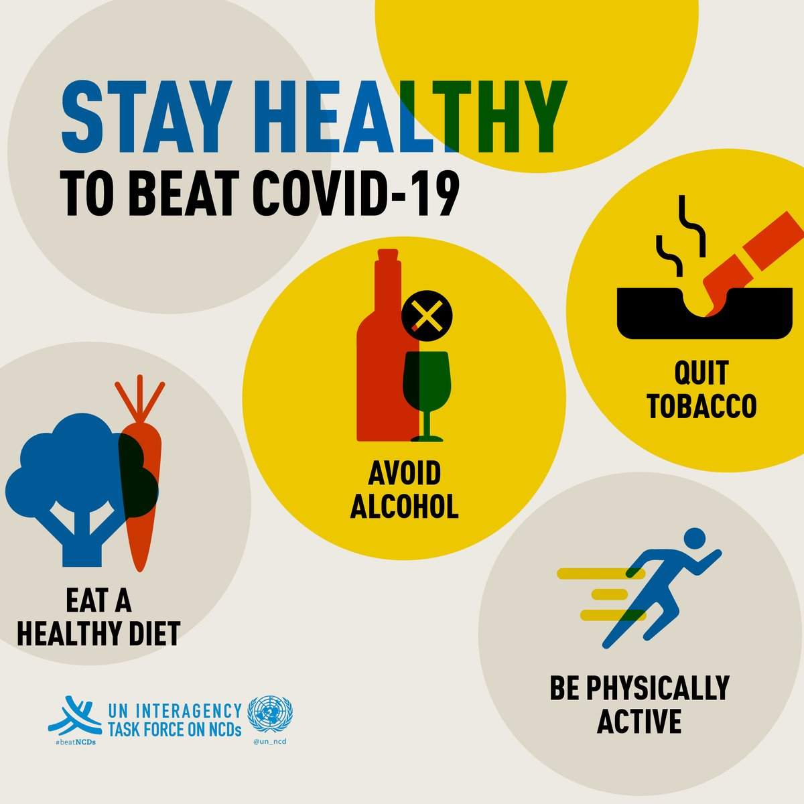
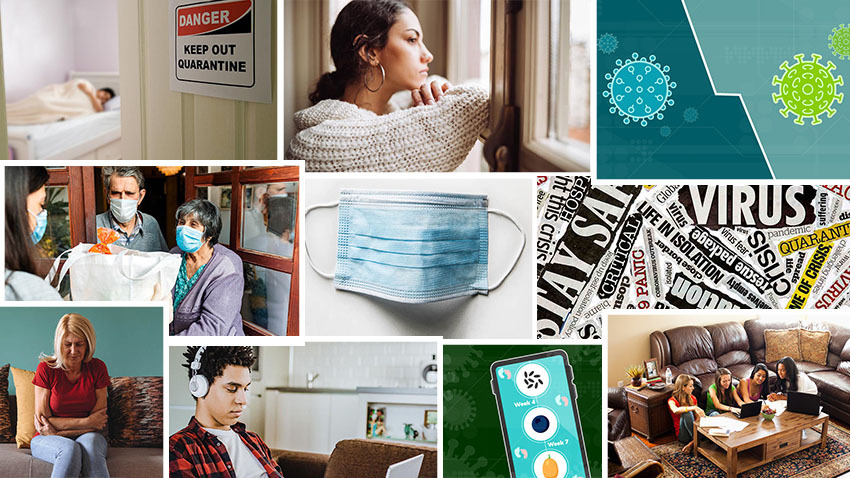
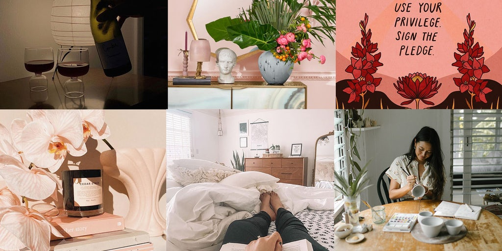
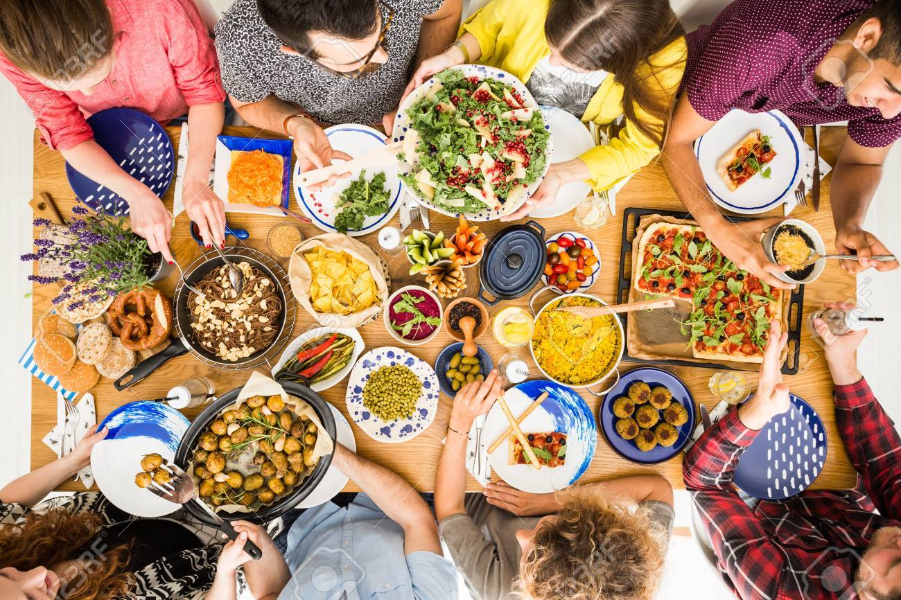
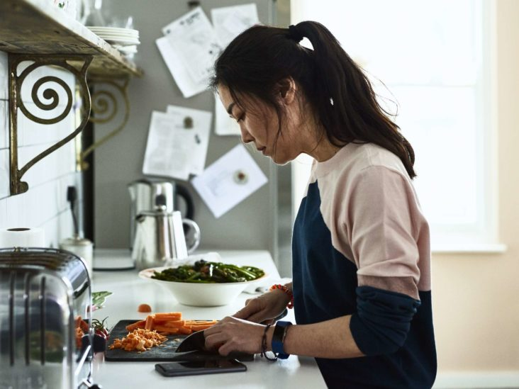
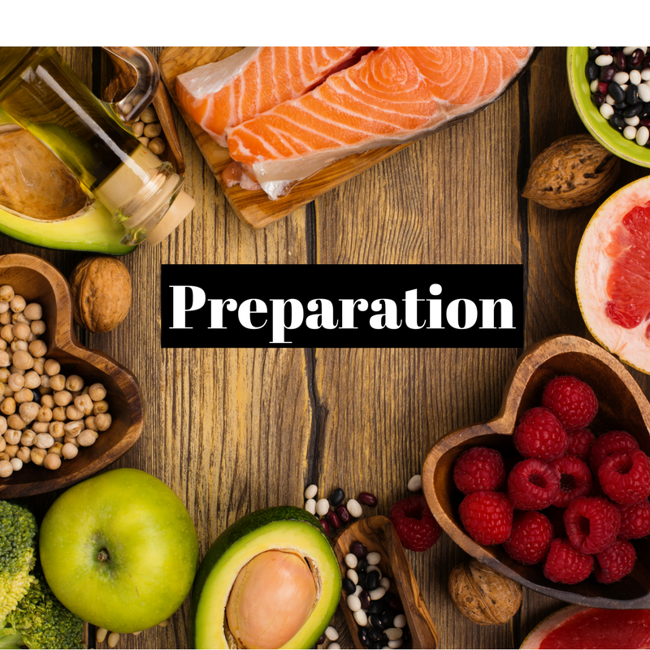
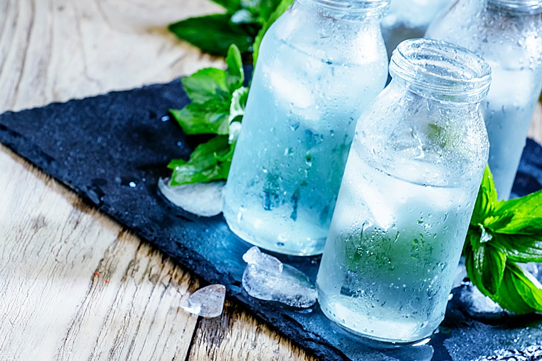
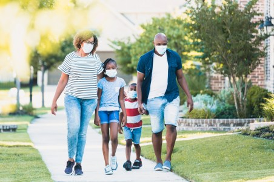
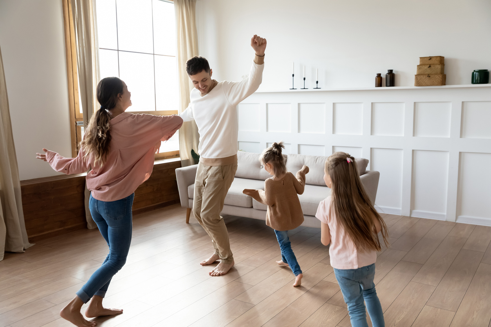
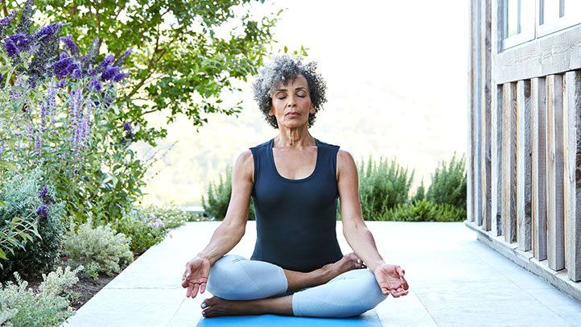
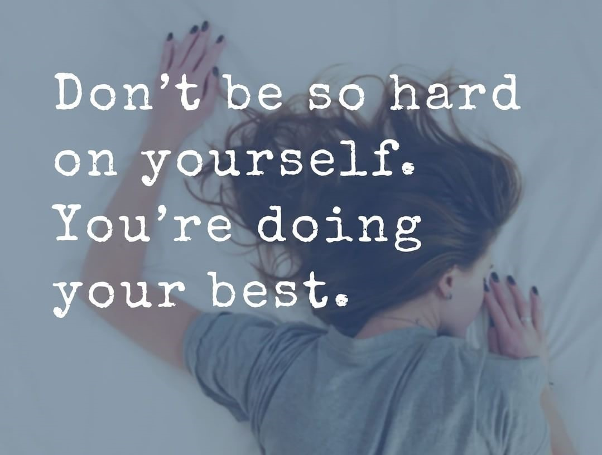

It's quick to slip into poor habits and ignore already developed safe behaviors at periods of tension and instability.
Maintaining a safe lifestyle benefits both your mind and body, preparing you to face the challenges faced by the coronavirus pandemic.
It's more crucial than ever to keep the immune system in good shape. The below are few suggestions for maintaining a balanced lifestyle at this time:
- Eat Regularly and adopt a Healthy Balanced Diet
- Preparation is the Key
- Stay Hydrated
- Keep Active
- Don't Rely on Quick Fixes to Relieve Stress
- Sleep Well
- Don't be too Hard on Yourself
Many people overlook the value of a healthy diet, but it will make you feel more energized and strengthen your mental health.
Healthy choices, such as eating a variety of fruits and vegetables on a regular basis, will help you achieve your ideal diet. Stop fried and sugary snacks, no matter how tempting they are; the body and mind will reward you in the long run.
It's easy to forget to take breaks and eat meals while you're working long hours. Skipping meals will affect your ability to concentrate and trigger headaches and nausea, so set aside time to cook and consume a healthy meal to replenish your energy levels.
It's a good idea to think ahead when attempting to develop or sustain healthier behaviors. Life has changed dramatically in recent years, and it can be difficult to maintain a healthy balance. Meal planning can help you stay on schedule.
It's quick to run out of ideas and face the "what's for dinner" question every evening as we spend more time at home. Start preparing a few meals ahead of time or creating a weekly menu to keep things interesting and your healthier eating on track. This can allow you to use up more of the items already in your pantry, reducing the amount of time you spend at the store.
Since water makes up the majority of the human body, it's no surprise that remaining hydrated is crucial. Drinking enough water not only lets you sustain a healthy weight, but it also helps you maintain a healthy body by allowing you to think more easily, easing digestion, and retaining energy levels, according to studies.
It is suggested that we drink six to eight glasses of water a day. If you don't like plain water, try flavoring it with fresh lemon, ginger, cucumber, or mint, which is also good for digestion. It's crucial to keep in mind that, while fruit and vegetable juices and smoothies are nutritious, they're also high in sugar. Only about 150ml of these should be consumed per day. Read more on How to Stay Hydrated
RELATED: Importance of H2O
Staying active is important for your wellbeing, and the endorphins emitted during exercise will help you feel better. Many people will have to adjust to new ways of exercise and remaining fit as a result of social distancing policies, but it is still possible to get a great workout at home.
If stress makes you crave salty and fatty foods or causes you to overeat, you’re not alone.
Many people think that taking the 80/20 solution, which entails making good decisions 80% of the time, is an achievable way to live a healthy lifestyle. Don't starve yourself, just try to make healthier decisions the majority of the time.
Keeping safe and tasty treats on hand will prevent you from reaching for the biscuit tin at the first sign of hunger. It's fine to eat a little of whatever you want, just keep in mind that balance is important.
Sleep is often one of the first things to suffer when our routines change. Try to keep to regular sleep patterns to ensure you’re getting the recommended 7-9 hours a night.
Getting adequate sleep is beneficial to the physical health and emotional well-being. Sleeping well has been shown in studies to make people happy, boost their memory, and help them keep a healthier weight. A decent night's sleep will also help the immune system function better.
If you have insomnia or have trouble sleeping, try using therapy software like Relax and Sleep Well and Calm to help you relax.
You'll have rough days and make poor decisions from time to time. This is a really trying moment for everyone; it's perfectly acceptable not to be well. There's no right or wrong way to respond to what's going on, and chances are others are feeling the same way you are, so seek out help from friends and family if you need it.